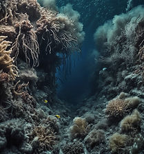
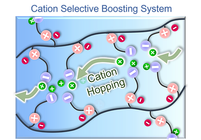
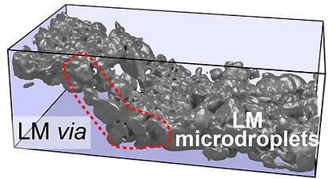
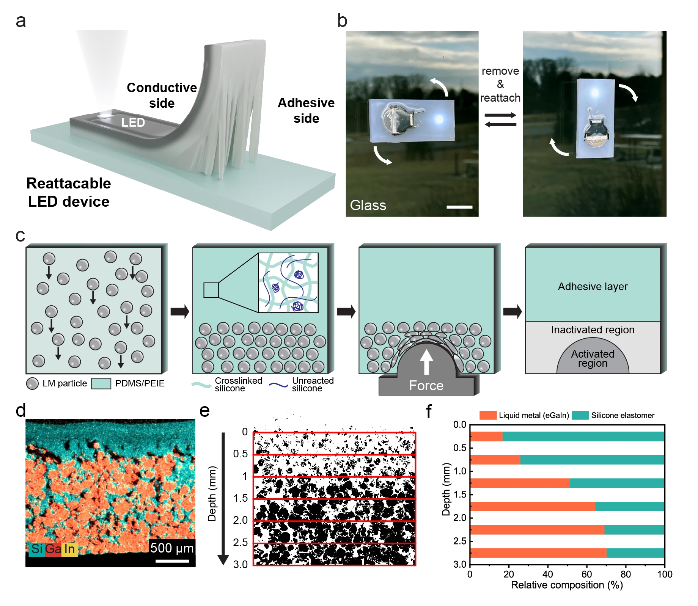

Materials & Process
Build the material system
Students work on synthesis, formulation, interfacial control, and process tuning rather than only running downstream tests.
Research Themes
The lab studies how materials, interfaces, and processing windows can be engineered so energy devices continue to work under demanding environments and use conditions.
Each research area below highlights the technical problem, the lab's approach, and the kinds of contributions students can make.
Materials & Process
Students work on synthesis, formulation, interfacial control, and process tuning rather than only running downstream tests.
Characterization
Electrical, thermal, and reliability measurements are treated as evidence for mechanism and process quality, not just a checklist.
Translation
The research is framed so material advances can support functioning devices, credible claims, and eventually strong publications.

Theme 01
Problem. Electric energy transmission in deep-sea, space, and deformable systems requires interconnects that survive pressure, temperature variation, low-pressure conditions, and repeated mechanical stress.
Approach. The lab studies materials selection, interface engineering, and fabrication routes that preserve conductivity while reducing thermal and mechanical mismatch across the structure.


Theme 02
Problem. Ionic transport is slower than electronic transport, but ion concentration gradients and ion-polymer interactions can create useful memory, thermal, and adaptive behaviors that standard systems do not offer.
Approach. The lab investigates ion-gel composition, polymer-network structure, and 3D processing conditions so ionic dynamics can be tuned into stable and controllable device functions.

Theme 03
Problem. Demand from electric vehicles, AI infrastructure, and power systems is pushing beyond conventional silicon, but scalable routes for materials such as GaN and SiC remain a core challenge.
Approach. The lab explores liquid-metal-assisted processing in ambient environments to lower fabrication barriers while maintaining the interfaces and structures needed for high-performance device modules.
Student fit
If one of these themes is a match, the application process can focus quickly on defining a realistic first project and milestone.
Contact
333, Techno jungang-daero, Hyeonpung-eup, Dalseong-gun, Daegu, Republic of Korea, 42988
If you are interested in one of these themes, leave your email and the lab can follow up.